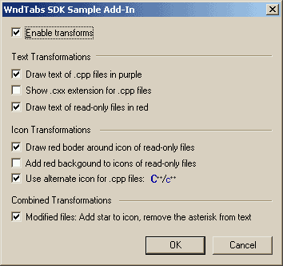
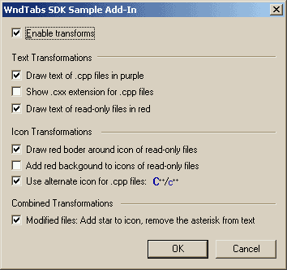
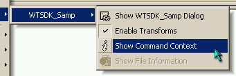
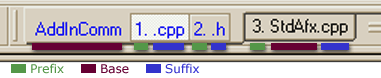

The WndTabs SDK
Version 3.0
 

Introduction
The WndTabs SDK allows Visual C++ addins to interface with WndTabs, adding
new capabilities to the WndTabs tabs. Through the SDK, you can add new
commands to the tabs, and also alter the way the tabs look. Addins that
enhance WndTabs through the SDK are called WndTabs addons.
The SDK is supported by version 3.0 of WndTabs (get
it here).
If you aren't familiar with the WndTabs addin, you can learn more
about it here and here.
WndTabs addons must be registered with the AddInComm
library, as WndTabs uses the AddInComm's dynamic discovery and messaging
facilities to communicate with the addons. After registering with
AddInComm, the InitWndTabsIntegration
function is used to initialize the SDK. Both procedures should be performed in your addin's
OnConnection method:
STDMETHODIMP CDSAddIn::OnConnection(IApplication* pApp, VARIANT_BOOL bFirstTime, long dwCookie, VARIANT_BOOL* OnConnection)
{
...
// Register with AddInComm
m_hAddin = AICRegisterAddIn("MyAddon", 1, 0, 5, AddInCallback);
// Register with WndTabs
InitWndTabsIntegration("MyAddon", OnTabUpdate, OnWTCommand, OnWTCommandUpdateUI, Commands_For_WT, countof(Commands_For_WT), OnWTEvent,
WndTabs_Ev_WindowChanged | WndTabs_Ev_TabClicked);
...
}
The AICRegisterAddIn call adds your addin to AddInComm's active addin
database. In the above example, the add-in is registered with the name
"MyAddon", with the version number 1.0.5. The AddInCallback
function is designated as the AddInComm message handler.
InitWndTabsIntegration initializes the WndTabs SDK. It must know the
AddInComm name your addin is using, as well as other information regarding
specific SDK functionality, such as which commands your addon supports.
These parameters will be discussed in further detail below.
To clean up resources, and properly unregister from WndTabs and AddInComm,
the following code should appear in an Addon's OnDisconnection method:
STDMETHODIMP CDSAddIn::OnDisconnection(VARIANT_BOOL bLastTime)
{
...
EndWndTabsIntegration(); // Unregister from WndTabs
AICUnregisterAddIn(m_hAddin); // Unregister from AddInComm
...
}
We're almost there - just one thing left to do: The WndTabs SDK code
has to be hooked into your AddInComm message handler, allowing it to
intercept SDK related messages. In the OnConnection function, we specified
AddInCallback as the callback function. A skeleton for this function
would be:
// callback for AddInComm
int AddInCallback(LPCTSTR pCmd)
{
AFX_MANAGE_STATE(AfxGetStaticModuleState());
int iRetVal;
if ((iRetVal = WndTabsInt_Callback(pCmd)) != -1) // call the SDK
{
return iRetVal;
}
// do any other processing here
return -1; // -1 should be returned if you didn't handle the command
}
It is an AddInComm convention to return -1 if you don't handle the specified
command. For non-SDK commands, the WndTabsInt_Callback
function returns just that. This means that if your addin doesn't implement any AddInComm
commands of its own, you can
pass WndTabsInt_Callback directly to the AICRegisterAddIn
function to save
yourself the trouble of writing a callback function.

Up to this point, we've seen how to create a skeleton addon that doesn't
actually do anything. It's time to add some functionality.
One of the things that addons can do is to add new commands to
WndTabs. These commands are displayed under the Addons sub-menu (which is
available, by default, under both the tab context menu and the main WndTabs menu).
Declaring Your Commands And Command Handler
For each command you want to add, you must supply a WTSDK_CommandDef
structure:
// from the SDK headers
struct WTSDK_CommandDef
{
int iCmd; // the identifier for your command
LPCSTR pszName; // the display name for your command
int idBmpRes; // the resource id for the menu bitmap (or -1)
WTSDK_UIUpadateFlags UIUpdateFlags;
};
// from WTSDK_Samp
WTSDK_CommandDef Commands_For_WT[] =
{
{ idCmdShowDialog, "Show WTSDK_Samp Dialog", IDB_MAIN, UI_AlwaysAvailable },
{ idCmdEnable, "Enable Transforms", -1, UI_UseCallback },
{ idCmdShowContext, "Show Command Context", IDB_INFO, UI_AlwaysAvailable },
{ idCmdFileInfo, "Show File Information", IDB_FILEINFO, UI_MustHaveFile }
};
The pszName and idBmpRes fields are self explanatory.
The iCmd field should specify a unique identifier for each command.
This identifier is passed back to your command handler, just as Windows passes message
identifiers to your program's message handler. The UIUpdateFlags
parameter specifies when the command should be enabled/disabled. But we'll
get into that in just a bit.
You also need to supply a command handler callback. The handler looks
like this:
void OnWTCommand(int iCmd, const WTSDK_CommandContext *pCmdContext)
{
switch (iCmd)
{
case idCmdEnable :
cfg_bEnabled = !cfg_bEnabled;
ForceTabUpdate();
break;
...
default:
// unknown command!
ASSERT(FALSE);
}
}
Before any WndTabs command (either internal or Addon supplied) is executed, WndTabs
creates a command context object. This object includes invaluable
information about the tab/file that is associated with the command. This is the
tab that you right-clicked on (if you execute a command from the tab context
menus), or the active tab (if you use a keyboard shortcut or a non-tab menu).
Note that it is still legal to use a keyboard shortcut when there are no windows
at all! The command will still be issued, but the command context will
reflect the fact there is no associated tab/file.
struct WTSDK_CommandContext
{
UINT cbSize; /* set to size of this structure */
BOOL bHasDoc;
BOOL bHasFile;
BOOL bIsTextWindow;
BOOL bIsActiveWindow;
BOOL bIsGroupOperation;
HWND hWnd;
char szFullPath[MAX_PATH];
CComPtr<IGenericWindow> pWindow; // DevStudio automation
CComPtr<IGenericDocument> pDoc;
};
|

|
Again, most of the WTSDK_CommandContext fields are self explanatory.
The following is a brief overview of a few of the contexts you can run into:
| bHasFile |
True - This is a normal file window |
| False - This is a non file window (e.g. the
"Disassembly" window)/a window of a file that hasn't been
saved before/command issued with no open windows |
| bHasDoc |
True - This window has editable content (i.e. a
text file or resource file) |
| False - This is a non editable window (e.g. the
"Disassembly" window)/command issued with no open windows |
| bIsTextWindow |
True - A text window |
| False - A non text window, such as a resource file
or a docked DevStudio window (i.e. "Disassembly",
"Output", etc.) |
| bIsGroupOperation |
True - The user clicked on the shared part of a
group tab (WndTabsExt only) |
| False - The user clicked on a non group tab or on a
specific file within a group tab |
UI Updates
The last piece in the puzzle is the UI update. It is up to you to tell
WndTabs when your command should be enabled or disabled. For your
convenience, the WndTabs SDK defines the WTSDK_UIUpadateFlags
enumeration, which is passed in the command's WTSDK_CommandDef
structure:
enum WTSDK_UIUpadateFlags
{
UI_AlwaysAvailable = 0,
UI_MustHaveFile = 1, // was already saved at least once, i.e. not a new text window
UI_MustHaveDoc = 2, // any editable window - windows such as "Disassembly" don't have a doc
UI_MustHaveTextDoc = 4, // same as above, but must be a text document (for instance, not a resource)
UI_MustHaveOpenWindows = 8, // at least one window must be open
UI_MustBeActiveWindow = 16, // command applies only to active windows
UI_UseCallback = 128 // call user-defined UI update callback
};
You can pass any combination of flags:
(UI_MustHaveDoc | UI_MustBeActiveWindow) // enable only if has a document and is the active window
(UI_MustHaveFile | UI_UseCallback) // enable/disable based on file availability, then call user callback
The user callback function for UI updates is an optional function
that you can pass to the SDK while registering your addon. This function
is very similar to a function that you would write to handle MFC's ON_UPDATE_COMMAND_UI
message. For example, this is the UI handler
callback implemented by SDK sample:
// This is a sample of a custom UI handler (used only for the "Enable Transformation" command).
// The handler sets a checkmark for the command based on the current configuration settings.
void OnWTCommandUpdateUI(int iCmd, CCmdUI *pCmdUI, const WTSDK_CommandContext *pCmdContext)
{
// only the idCmdEnable command requested UI notifications
ASSERT(iCmd == idCmdEnable);
pCmdUI->Enable(TRUE);
pCmdUI->SetCheck(cfg_bEnabled);
}
Tab Morphing


The most interesting feature of the SDK, in my opinion, is the ability to
transform the tabs themselves. An SDK addon has access to the following
tab attributes:
- The Tab Text - You can change the text as well as the text color.
- The Tab Icon - You can change/replace the icon.
- The Tab Overlay Icon - The overlay icon is merged with the regular
icon before the tab is drawn. For example, the tab numbers are
overlays.
 Note: Tab transformations require that the
WndTabsExt component be enabled.
Note: Tab transformations require that the
WndTabsExt component be enabled.
In the above pictures you can see a few of these transformations:
| |
Text
Transform |
Icon
Transform |
Overlay
Icon Transform |
| Left Picture |
The .cpp extension was changed to .cxx
The color was changed |
A new icon for .cpp files
A red border for read-only files |
N/A |
| Right Picture |
The asterisk was removed
The color was changed |
A new icon for .cpp files |
The asterisk was added as an overlay |
Note the use of an "overlay" for the asterisk icon (right
picture). Although you can change the actual icon,
overlaying is usually achieved by modifying the overlay icon (which usually holds the tab number
image). Changing the overlay icon will ensure that the overlay is unaffected when other addons modify the actual icon.
Transformation are preformed in two stages:
- The change stage - In this stage, addons a expected to make any
destructive changes, such as totally replacing the text or icon.
- The modify stage - In this stage, addons are expected to make modifications
to the current text/icons.
Although the above guidelines cannot be enforced, all addons are expected to
cooperate.
The Tab Modification Function
The tab modification callback (which was passed to the SDK during InitWndTabsIntegration
call) looks like this:
void OnTabUpdate(WTSDK_TabUpdateInfo *pTabUpdateInfo, const WTSDK_CommandContext *pCmdContext)
{
...
// find out some stuff about the tab's file
const char * const pLastDot = strrchr(pCmdContext->szFullPath, '.');
bool bIsCpp = (pLastDot && (stricmp(pLastDot, ".cpp") == 0));
...
if (pTabUpdateInfo->stage == WTSDK_TabUpdateInfo::change)
{
// the "change" stage - perform any operation that totally replaces texts or icons
}
else
{
// the "modify" stage - perform any operation that makes alterations to existing texts or icons
}
}
Like other callbacks, you have access to the command
context. However, the actual information about the tab is passed in
the WTSDK_TabUpdateInfo structure:
struct WTSDK_TabUpdateInfo
{
UINT cbSize; // Must be set to sizeof(WTSDK_TabUpdateInfo)
enum { change, modify } stage; // see explanation here
// == Text on Tab ==
int iTabNumber; // the number (0 based index) of the tab - notice,
// however, that the text indexes shown to the
// user start at 1 (i.e. TextIdx==iTabNumber + 1)
char szPrefix[256]; // the text before the file name (i.e. tab number) see picture
char szBase[512]; // the text that belongs to the tab's entire group (the file name) see picture
char szSuffix[256]; // the text that is different for each tab in the group (the extension) see picture
// These are the texts without alterations - DO NOT CHANGE
const char *pszOrigPrefix, *pszOrigBase, *pszOrigSuffix;
// == Colors ==
COLORREF crTextColorSel; // when tab is selected
COLORREF crTextColorNotSel; // when tabs isn't selected
// == Icons ==
wt_auto_icon hIcon;
wt_auto_icon hIconOverlay;
};

In order to change the text, you may modify szPrefix, szBase
and szSuffix. The text color is defined by crTextColorSel
and crTextColorNotSel. The icons (regular and overlay) are
accessed through the hIcon and hIconOverlay variables.
Keep
in mind that the text in the tab info object might not correspond to the
original file name. For instance, for .cpp files, szSuffix
should be ".cpp", however, any addon may change this text. Even
the pszOrigSuffix variable that holds the original value might not
have ".cpp" as it's value, because the user might choose not to
display extensions on the tabs! If you need to access the file's name, use
the command context object.
WndTabs Events
Another service provided by the SDK is WndTabs events. To get access to
event, you may optionally pass an event handler to the SDK initialization
function. This function will be called whenever one of the following
events occurs:
| WndTabs_Ev_WindowChanged |
Called whenever the active window is changed (or if the last window is closed).
The extra parameter to this event is the HWND of the new window (or NULL if there are no open windows).
NOTE: If the user changes/opens/closes windows very quickly (e.g. by using Close All Windows or opening many files at once), an event might
not be generated for every single window activation/deactivation! |
| WndTabs_Ev_TabClicked |
Called whenever a user left-clicks on a tab. Note that this does not necessarily mean that a window change will occur.
The extra parameter to this event is the number of the tab that was clicked (or -1 if there are no open windows). |
The SDK Sample Addon (WTSDK_Samp)
You know what they say: A sample's worth a thousand articles. And I say
that they're right!
The SDK comes with a sample addon - WTSDK_Samp. The sample demonstrates
everything you can do with an addon - text transformations, commands, and UI
callbacks. It also demonstrates proper AddInComm registration. In
short - it's a good place to start.
Tips For Writing Addons
If you're thinking about writing an addon, here are a few pointers to get
you started:
- The source code for WndTabs is available for download. You can
compile a debug build that will help you track bugs much more quickly.
- Your addon is just another DevStudio addin. For tips on debugging
addins, check the WndTabs online help under the "Compiling and
Debugging" topic.
- If you mix Debug builds of addons with a Release build of WndTabs (or visa
versa), your addon dialogs might not appear centered on the screen. This
is normal. The problem will go away when create a release build.
- Support is just an e-mail
away!
Conclusion
If you install and play around with the SDK and its sample, you will quickly
realize that the sky is the limit! Everything from unique icons to hooking
the tabs into your favorite version control system is now possible...
Just write a WndTabs addon!
WndTabs is Copyright © 1997-2002 and the WndTabs SDK is Copyright © 2000-2001 by Oz
Solomonovich
For more information, questions, or support, visit the WndTabs site at http://www.wndtabs.com
{kind=link}